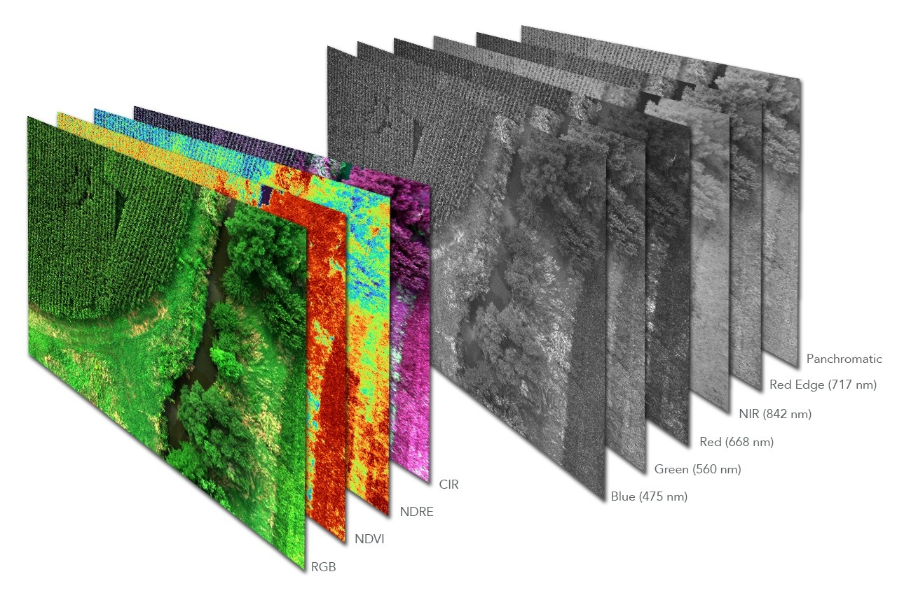

技术愿景
随着深度学习模型日益庞大，如何让复杂的视觉算法“跑得快”（轻量化）且“看得懂”（多模态）是当前的核心挑战。
我们致力于研究高效的模型压缩技术，并探索视觉与语言（Vision-Language）的交互机制，实现农业场景下的智能问答与开放集感知。
Research Focus 02
多模态信息融合
打破单一视觉模态的局限，结合图像（Vision）与语言（Language），利用大模型技术实现对复杂场景的深度理解与开放式交互。
多源异构数据融合
融合 RGB 图像、深度信息（Depth）与文本描述，提升复杂环境下的场景理解能力。
视觉语言大模型 (VLM)
研究 CLIP、LLaVA 等模型在农业领域的微调与应用，实现“看图说话”式的病害诊断。
开放集目标检测
利用多模态特征，识别训练集中未出现过的新型病害或杂草（Zero-shot Detection）。

Research Focus 01
视觉模型轻量化与边缘部署
解决野外无网络、低算力环境下的实时计算难题。通过算法优化，将庞大的 Transformer/CNN 模型“装进”小小的嵌入式芯片中。
模型压缩与加速
研究网络剪枝、权重量化及知识蒸馏技术，大幅降低模型参数量。
端侧实时推理
在 NVIDIA Jetson、树莓派等边缘设备上，实现目标检测与分割算法的毫秒级响应。